官方客户端一个字没动
只把那张呆板的脸换了
纯前端换皮 + 一层很薄的 C# 外壳，双击 exe 就能用。不需要 Docker、不需要另起服务、不用登录新账号。里面还住着一个不联网的小果 —— 记得你说过什么，会在你不来找她的时候吭一声。
就是长这样
全部是真机截图，不是效果图
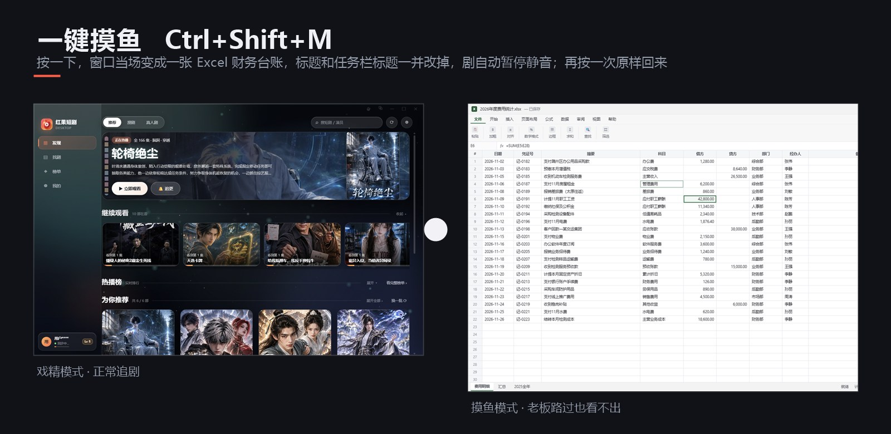
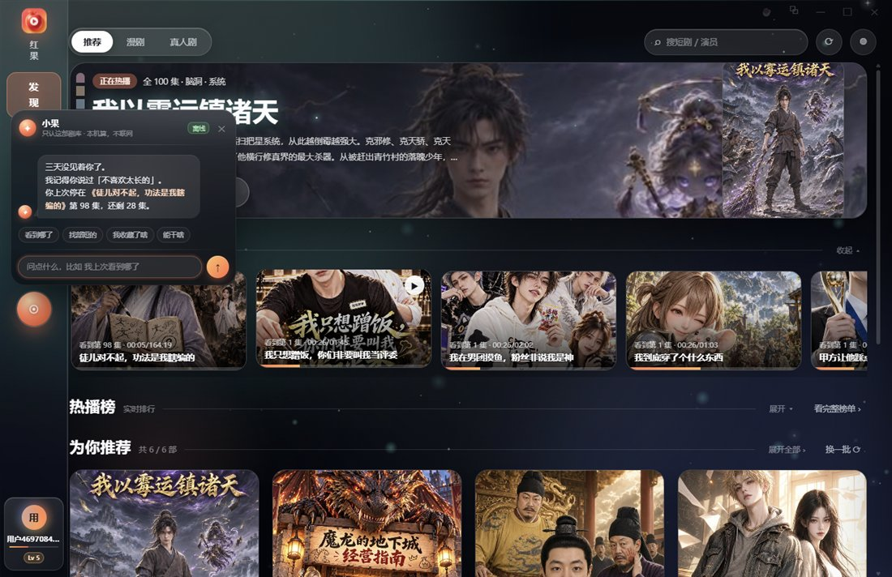

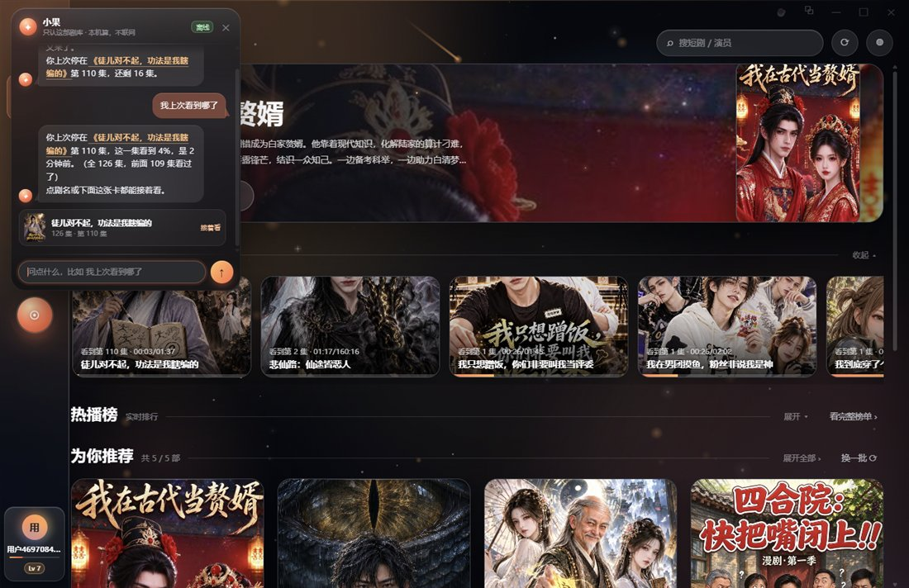
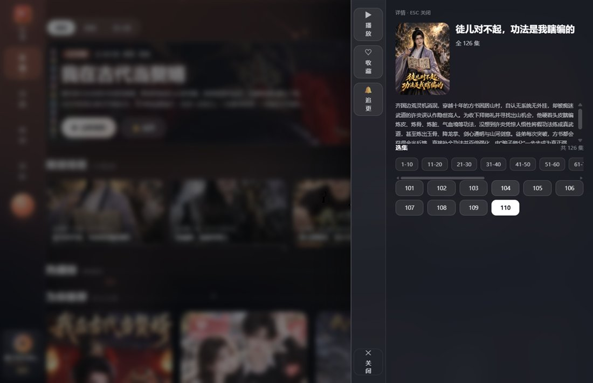


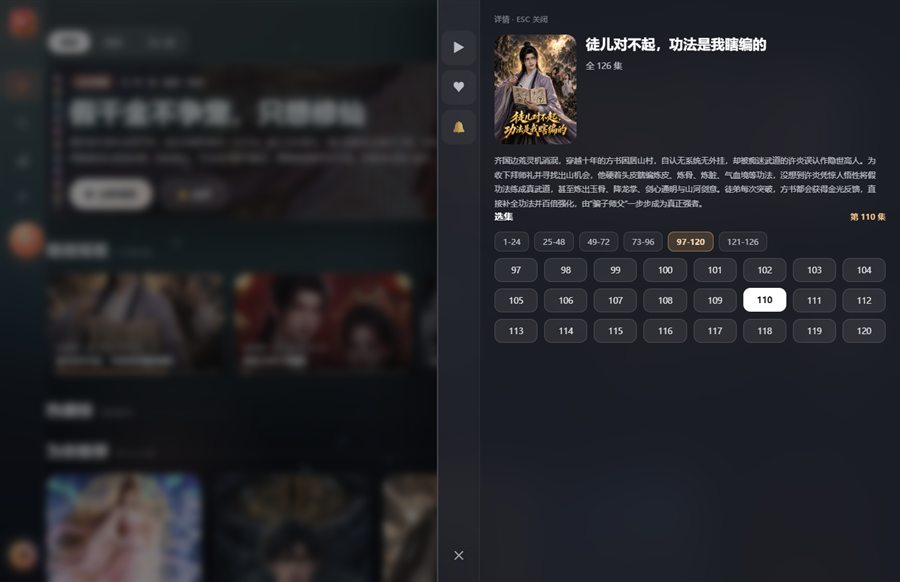
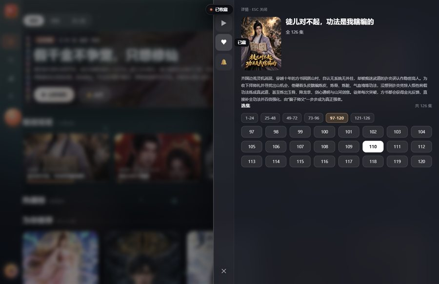
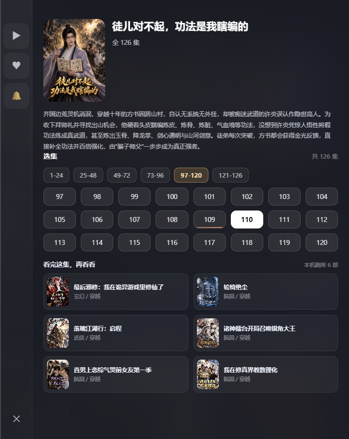

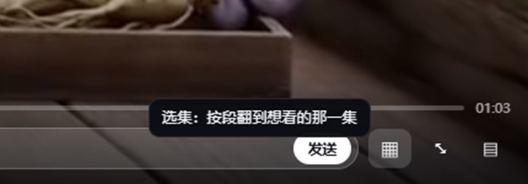
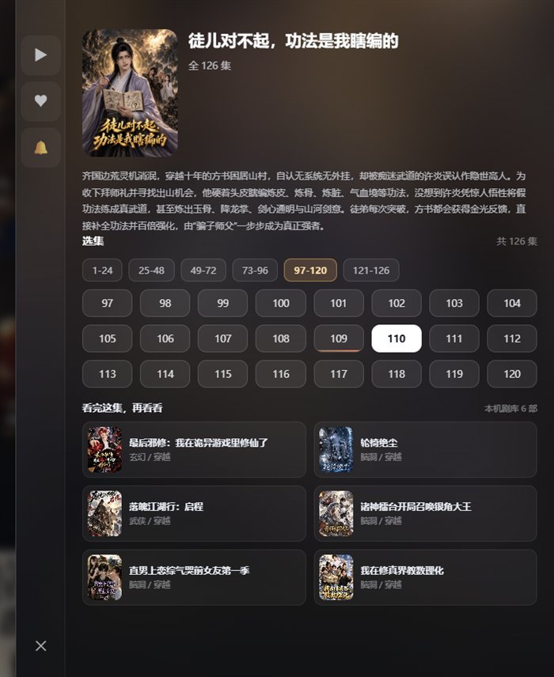
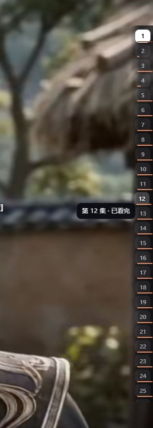
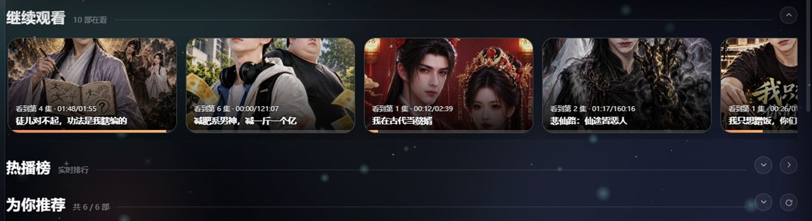
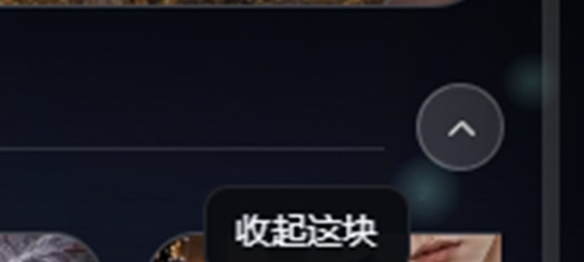
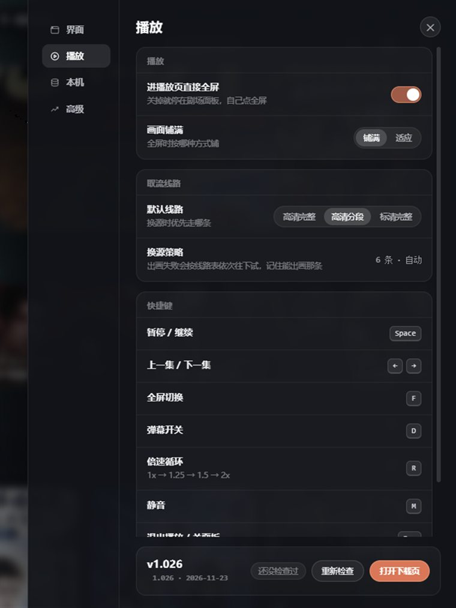
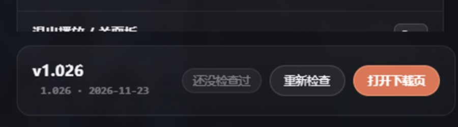
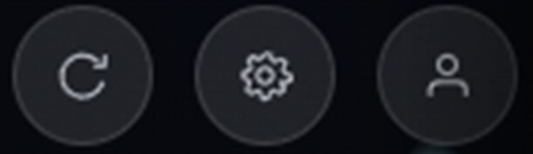
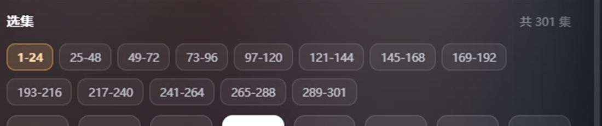
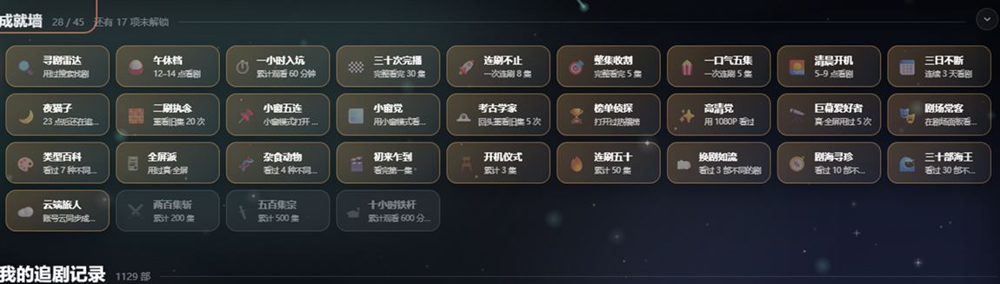
界面
- 左侧 68px 图标栏，鼠标移上去才铺开成抽屉；小窗形态不铺开
- 幽光 / 星空 / 流星 / 光尘动态背景，按剧的类型换配色，鼠标有视差
- 首页折叠、找剧细化（排序 + 集数段 + 题材）、榜单名次牌与涨跌
- 详情页多季切换，选集按 10 集分段
播放
- 打开即真全屏 + 铺满裁剪 + 自动播放，播完原地接下一集
- 每集都从头，续播点精确到秒，看过的集标暖色
- 倍速 / 音量滑条 / 弹幕开关 / 画面三档
- 换源一键切六条线路，快失败的自动往下换
小果（本机剧库助理）
- 查进度、按关键词找剧、翻收藏、报本机记录，说「看《XX》」直接开播
- 零联网、零模型、零截屏；语义版才带一个 24 MB 的本机向量模型，单句 13–39 ms
- 记得你亲口说过的偏好，「推荐一部」时按记过的来挑（记过「不喜欢太长的」就真的挑短的）
- 记忆另写一份可打开核对的 Markdown，本地存储空了还能从文件兜底恢复
- 托盘常驻，45 分钟醒一次，只在 8:00–22:00 说一句，一天最多一句
摸鱼
- 任意时候按 Ctrl+Shift+M，窗口当场变成一张 Excel 财务台账
- 标题栏、任务栏标题一并改掉，剧也顺手暂停静音
- 再按一次原样回来，进度接着走
「播放」能播、点具体集数没反应 —— 一查是两件不相干的事：取流在上一版修好了，但分集格子从来没接过点击。renderEpisodeGrid 建格子时只挂了 onmouseenter 用来提前预取，没有 onclick，#sEps 上也没有任何 click 委托，所以不管 core 通不通，点 2、3、4 集都不会发生任何事；「播放」按钮能播只是因为它是 playEpisode(0)。现在在 #sEps 挂容器级 click 委托（closest .ep → dataset.i → playEpisode），只绑一次、用 dataset.picked 打标，renderEpisodeGrid 反复重建 innerHTML 也不会掉；playEpisode 里「没有视频号就静默退回详情页」也改成先 toast 一句再退。实测不靠人手点，用联调参数让程序自己 querySelector 点第 3 个格子：stream req FAIL ep3 → web fallback ep3 → metadata ok 360x640 dur=62.368798 → web fallback OK ep3 dur=62.37s，从一次 click 到出画整条链通了。
这一版只修一件事：点开剧集、点具体集数，终于真的出画面了。病根查到底了 —— core 调的 novel/player/multi_video_model/v1/ 已被官方停服，对任何剧、任何 vid 都是 HTTP 200 加 0 字节；把官方最新桌面内核 0.2.179 单独起在临时端口、指到同一份 data-dir 复测，play/info 照样 502 VIDEO_MODEL_EMPTY，所以不是版本旧、不是登录态、也不是网络，是签名与设备指纹在服务端被静默拒了，皮肤版算不出来。换了一条路：官网页播放器给普通访问者留着的 POST /api/video/protected/fallback-play-info（body 必须是 {"item_id":"<vid>"}，写 vid 会回 400），能拿到完整一集的 360P H.264/AAC 明文 MP4。那台 CDN 只认官网自己的 Referer，带本机地址直接 403，浏览器里又改不了 video 的 Referer，所以外壳在本机 127.0.0.1 上开了一个小转发口：/webplay?vid= 取地址，/media?u= 补 Referer 转发并原样透传 Range，回 206/200 带 Content-Range，端口交系统分配。实测第 1 集 360×640、116.52 秒，第 2 集 89.23 秒，都是完整正片（侧边还排掉了一个坑：SEO 页那支 360p.mp4 只有 10 秒，是预告不是正片）。core 现在每集要空转 3.5~4.8 秒才回空，所以第一次撞空后记 8 分钟窗口，窗口内换集直接走兜底、基本秒开，兜底失败就清窗口回 core，官方哪天修好不用改代码自己回高清。已知边界：兜底只有 360P；main_url 带 expire，用前比对、过期重取。
「我的」页照官方那两行的形态补齐：追剧 / 收藏两个大字 tab（26px，未选 46% 灰、选中纯白加重），tab 行右端加一颗 32px 圆形搜索钮（官方放大镜的位置），点开是本页输入框，按剧名边打边筛，Esc 收起；筛选胶囊「全部 / 已看完 / 未看完」的选中态从原来那圈橙细边改成官方那种「橙字压半透明橙底、无边框」，右侧依次是计数、网格/列表切换、竖分隔、「管理」（默认纯文字，管理态才变白底药丸）。管理里批量动作按能力分级：收藏 tab 走「取消收藏」真回写 core，追剧 tab 只做「从本机隐藏」，底部写明云端记录还在，隐藏后多一个「恢复 N」。一千部不再一次全铺，默认 40 部、底部「再看 40 部（还剩 N 部）」；成就墙折叠态从 4 行压成一行横滑，追剧列表不再被挤到屏幕最底下。播放这块把 core 的内部 stage 码（VIDEO_MODEL_EMPTY 等十几个）翻成人话，上游返空时明说「所有线路都是同一个空响应、是官方片源侧的问题」，并多给一颗「打开官方网页」顶上；loadStream 里原来那句静默 return 也补成浮层与气泡，点集数不会再像没反应。
有人在 Windows 7 上装，弹的是「内置服务没有启动起来，请查看 app.log」。日志一到就明白了一半 —— core 是 Go 1.25.14 编的，静态导入表干净得没什么可说（只 kernel32 的 47 个老 API），所以不是缺 DLL 那种加载期就死。它死在运行时里：Go 用 WaitOnAddress 做信号量，这接口 Win8 才加进系统，在 Win7 上取到空指针，rip 直接落在 0x0，退出码 2。三次尝试一字不差。这种缺失没法补 —— 用户态伪造同步原语不成立。所以这版改成：启动先用 RtlGetVersion 读真实版本（绕开未 manifest 程序在 Win8 以上一律谎报 6.2 的老毛病），低于 Win10 一个说明框直接退出，讲清为什么、以及换台机器就行；真想折腾带 --force。失败弹窗也不再只说「去看日志」，改成给系统版本、退出码人话、core 自己吐的最后 6 行，点确定直接拿记事本打开。顺带能认出 Go 崩溃的指纹：PC=0x0 加 runtime.asmstdcall，一句话说成「它调了一个这台机器上没有的函数」，不再扔一屏寄存器给人猜。
把 v1.028 那版从头审了一遍，改掉八处真会碰上的问题。最要紧的是推理没有互斥 —— 搜索框连着敲会往同一个 wasm 会话连发好几条 run，轻则结果错乱重则报错，现在所有推理过一条串行锁，同一时刻只跑一条。其次是体检行被 230px 的省略号吃掉半截，改成允许折行，「模型 22.8MB · 指纹 一致 · 线程 1 · 加载 1.2s · 单句 38ms · 库内 1130 部」整行看得全。打开设置·本机不再永远显示「未加载」，进这一页就静默把模型点着、加载中自己刷新到「就绪」。加载失败后 30 秒内不再每次搜索都重读 22.8MB。另外补全状态的复位、「重载」按钮按结果说话、超时文案不再写出「0s」、语义分组挪到「数据」之后。
没有新功能，也没动皮肤，改的是本机语义检索那块的工程卫生 —— 从 ImageToolbox 的 AI 模块借了四道约束。门槛：内存不到 4GB 自动进降级档，单句超时 8 秒收到 5 秒。指纹：新增 ai\manifest.json 记五个文件的 SHA-256，加载时校验 model.onnx，对不上就拒绝建会话 —— 坏掉的 onnx 原本不会报错，只会每次推理吐 NaN、语义永远返回空。超时：读清单 4 秒、读模型 15 秒、建会话 12 秒、整链 22 秒、单句 8 秒，超时就退回关键词找。体检行：设置·本机多了「语义检索」一栏，状态徽标 + 「模型 22.8MB · 指纹 一致 · 线程 1 · 加载 1.2s · 单句 38ms · 库内 1130 部」+ 超时次数 + 重载按钮。
把上一版留下的五处小别扭收掉。长剧的段按钮行不再横向滚 —— 「1-24 / 25-48 / …」自动换行，126 集 6 段还是一行，301 集 13 段折两行，那条压在按钮底边的细滚动条彻底消失。顶栏刷新 ⟳ 与账号 ◍ 两个字符图标换成与齿轮同一套的线性矢量，粗细留白终于对得上。28px 圆钮可见尺寸不变、热区外扩 6px（实际 40px）更好点，气泡改成朝上弹，不再压下一行卡片。成就墙不再一铺三屏：默认只露「已解锁（按拿到时间倒序）+ 3 个最容易拿的」，计数改成「28 / 45 还有 17 项未解锁」，右上圆钮展开后照样全铺 45 项。
小节标题右边的「收起」「展开全部」「换一批」全换成 28px 圆钮：一像素细边、13px 线性图标，hover 提亮放大、按下缩回，折叠方向靠图标转 180° 表达，气泡走自绘提示。空态统一成三件套：居中 66px 圆形图标 + 一句话 + 一枚胶囊按钮，搜索无结果与「我的」页空数据都换它。新加一整页设置面板，照 Folia 那页排：左侧分组导航（界面 / 播放 / 本机 / 高级），右侧分组卡 + 行项 + kbd 快捷键小方块，糊底、默认收起、直接全屏、画面铺满、默认线路都能当场开关。设置页底部那块版本区也做了：本机版本号 + 构建号 + 状态位，右边并排「重新检查」和「打开下载页」，不再只靠托盘气泡。
详情页换成气氛底：当前这部剧的封面放大、模糊 44px、压低亮度铺满整个面板，再叠一道自上而下的深色遮罩，切剧跟着换色。播放页左上那颗剧名浮标签升级成迷你卡：40×53 小封面 + 剧名 + 第 N 集 / 共 N 集，跟返回钮齐平，顶栏显形它就在，静置一会儿一起淡出。播放页右缘加了一条竖窄集数队列：一集一格，贴到右缘 96px 内才浮出，当前集白底，看过的格底一条 2px 橙线按进度，点一下直接切集，全屏切集保持全屏。
主界面左条不再整条铺开：固定 68px，鼠标压到哪一项就在那一项右边浮一个小标签，移开即收。详情页底部补上「看完这集，再看看」，按题材重合从本机剧库挑 6 部。选集分段按钮压上去会就地报数（第 97-120 集 · 看过 1/24 · 看完 1）；看过的集只在格底留一条 2px 细线，没记下时长的不画。播放页底栏图标化（▦ 选集、▭/▤/⤢ 三态铺满），Windows 那个灰白 tooltip 全部换成跟光标走的自绘气泡。再加首屏骨架屏、小窗里点详情自动还原窗口。
两条竖栏彻底统一。播放页左条 58→64，和详情页同一套 52 按钮、18px 图标、右缘细线，右侧 18px 圆角改直角；剧名与集数改成悬停才浮出的小标签，不再整条铺开。选集提示从浮层改成就地信息行：压住某一集，标题行右端直接变「第 105 集」。顺手修掉三个 bug——提示条样式曾被嵌进别的规则里导致顶部灵动岛失效、提示节点排在脚本之后拿不到、浮标签被容器宽度压成一百来像素导致长剧名被省略号吃掉。
详情页把空间用起来。面板 580→700，选集一段 10→24 集、每行 8 个铺满右边缘，段按钮一行放得下、横向滚动条消失；左侧图标条 58→64 并取消整条铺开，改成单个按钮悬停浮出小标签，封面与正文不再被压。
播放页和详情页那两条竖栏也收成图标。播放页 96→58，折叠态只剩一枚返回钮，鼠标移上去才铺开 214 露出剧名与集数；详情页 80→58，四个 46×46 图标格，悬停铺到 156 才出文字，并且改成绝对定位浮在面板上，展开时不挤压右侧内容。
把那条抽屉磨细。收起方向加了 100ms 延迟，鼠标顺着边缘划过去不再弹一下；展开态底色变实，背后内容不再透过字；小窗形态禁展开；backdrop-filter 退出过渡，展开那 340ms 少掉一轮逐帧重绘；图标 hover 从上浮的位移代替放大。
左边那条栏收起来了。104px 的竖排文字换成 68px 的图标窄条，只留 logo、四个线性图标、小果那颗球和头像；鼠标移进去自己铺开成 196px 的玻璃抽屉，文字淡着浮上来，移开自己收回。抽屉浮在内容上，不推挤主内容。
她说的剧名能点了。开场白那句「你上次停在《某部剧》第 109 集」里，书名号就是链接，点一下关掉面板、打开详情、选集落在那一集；上一次会话留下的旧消息也能点，按书名号里的字回库里认一次再跳。
版本推送：启动 12 秒后读一次 version.json，有新版本就在顶部胶囊和托盘各说一句，点了直接开浏览器。同一个版本只喊一次，全屏看片时不打扰。仓库也多了一个独立主页（就是你现在看的这页）。
记忆落成可打开的文件（md + json，空存储能兜底恢复）；「推荐一部」按记过的偏好挑；托盘常驻，到点吭一声。
小果开始记得住你、会等你、有点情绪：偏好抽取、开场白按见面间隔选句、一天一种话只说一次、亲密度三档光晕。
意图判定：122 条不同说法做成向量表，「我上次停在哪集了」这种原文接不住的话也能认得。
接了个本机向量模型（bge-small-zh-v1.5 int8，24 MB），没剧名也能按意思找剧。
整套界面重做、剧场模式与小窗、换源与续播、成长成就、一键摸鱼、小果上线、对话框玻璃化。